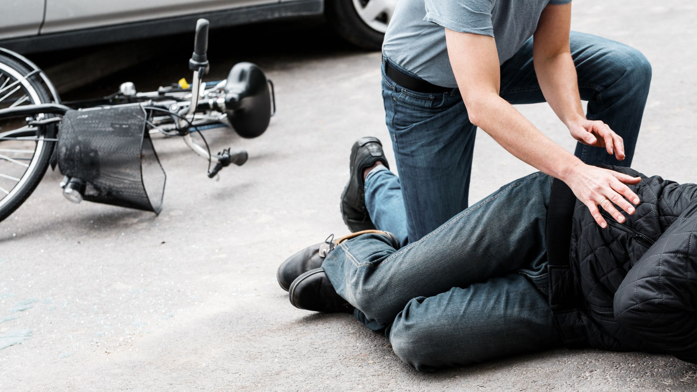

Uncovering the Truth: Debunking Common Myths About Bicycle Accidents in Huntsville, AL
A routine bicycle ride can change quickly when a driver turns unexpectedly, passes too closely, or fails to notice a cyclist sharing the road. In the confusion that follows a bicycle accident, injured riders may hear conflicting advice about fault, insurance, medical care, and their legal rights. That uncertainty may lead someone to search for a bicycle accident lawyer near me while trying to separate reliable information from common misconceptions.
At The Lackey Law Firm, we help injured people in Huntsville and throughout North Alabama understand their options after accidents caused by another person’s negligence. Our family law firm has served North Alabama for more than 40 years, and our attorneys handle their own cases while working together when collaboration benefits a client. A bicycle accident attorney can review the individual facts of a crash, explain how Alabama law may apply, and help an injured cyclist understand the next steps.
Many myths about bicycle crashes sound believable because they are repeated so often. The problem is that relying on an incorrect assumption after an injury can affect important decisions. Below, we separate several common myths from the facts.

Myth #1: Cyclists Do Not Have the Same Road Rights as Drivers
One common misconception is that bicycles do not belong on the road when motor vehicles are present. Alabama law says otherwise.
Under Alabama Code § 32-5A-260, a person riding a bicycle on a roadway generally has the rights and duties applicable to drivers of vehicles, except when a rule cannot reasonably apply to bicycles or when specific bicycle regulations control. Huntsville’s local ordinance also recognizes the rights and duties of cyclists using city streets, subject to applicable exceptions.
This means cyclists may legally use roadways, but they must also follow applicable traffic and bicycle-specific rules.
Passing Rules Also Matter
Alabama law also addresses how motorists should pass bicycles in certain situations. Under Alabama Code § 32-5A-82, a safe passing distance is defined as at least three feet under specified roadway conditions.
After a collision, several details may help determine what happened:
- Road layout and lane markings
- Posted speed limit
- Position of the bicycle and vehicle
- Traffic signs and signals
Actions of the cyclist and motorist
Because the law includes specific conditions involving the roadway and cyclist’s position, the three-foot rule should not be treated as applying identically in every passing situation.
Myth #2: The Cyclist Is Usually to Blame
A cyclist is not automatically responsible for a collision simply because a bicycle is smaller, slower, or less visible than a motor vehicle. Fault depends on what actually happened.
A driver’s actions may contribute to a bicycle accident through:
- Failing to yield when required
- Making an unsafe turn
- Following a cyclist too closely
- Driving while distracted
Failing to use reasonable care
The cyclist’s actions may also be considered when determining responsibility.
This is especially important in Alabama because the state follows a strict contributory negligence rule. If an injured person is found to have contributed to the accident through their own negligence, they may be prevented from recovering damages in a negligence claim.
For this reason, fault should be based on evidence rather than assumptions. A bicycle accident lawyer can review the circumstances and determine how Alabama law may apply.
Myth #3: A Minor-Looking Crash Means Minor Injuries
A bicycle crash may appear relatively minor at the scene while still causing injuries that require medical attention.
Unlike occupants of passenger vehicles, cyclists do not have the protection of a vehicle frame, seat belt, or enclosed passenger compartment. A collision may result in direct impact with a motor vehicle, pavement, curb, sign, or another object.
Potential bicycle accident injuries may include:
- Broken bones
- Traumatic brain injuries
- Spinal injuries
- Cuts and abrasions
Other forms of physical trauma
Some injuries may also become more noticeable in the hours or days following the crash.
Injuries Can Affect Daily Life After the Crash
The effects of an injury may continue well beyond the accident itself. An injured cyclist may need:
- Follow-up medical appointments
- Physical rehabilitation
- Time away from work
Help with everyday activities
Seeking appropriate medical care is important for addressing injuries. Medical records can also document diagnoses, treatment, and the progression of recovery.
Myth #4: A Helmet Determines Whether You Have a Case
Wearing a helmet is an important safety consideration, but helmet use alone does not determine who caused a bicycle accident.
Determining liability may require looking at several factors, including:
- Actions of the cyclist and motorist
- Traffic signs and signals
- Road and weather conditions
- Visibility at the time of the crash
- Vehicle movements
- Witness statements
Photographs or video footage
Questions involving safety equipment may also arise during an insurance claim or lawsuit depending on the circumstances.
A bicycle accident attorney can review the complete set of facts and applicable Alabama law rather than drawing conclusions from whether a cyclist was wearing a helmet.
Myth #5: The Police Report Tells the Whole Story
A police report can provide useful information about a bicycle accident, but it may not contain every piece of evidence relevant to an injury claim.
Other evidence may include:
- Photographs and videos from the crash scene
- Images of bicycle and vehicle damage
- Medical records and bills
- Witness statements and contact information
- Traffic or surveillance footage
- Documentation of lost income
- Damaged helmets, clothing, lights, or cycling equipment
Relevant insurance information
Some evidence can become more difficult to obtain as time passes. Video footage may be overwritten, conditions at the scene can change, and witnesses may become harder to locate.
For this reason, injured cyclists should not assume that all necessary evidence has been preserved simply because law enforcement responded to the accident.

Myth #6: Insurance Companies Automatically Pay Fair Compensation
Insurance coverage often plays an important role after a bicycle accident, but an insurer’s involvement does not guarantee that every issue will be resolved automatically.
An insurance company may examine:
- How the bicycle accident occurred
- The nature and severity of the injuries
- Medical treatment received
- Claimed financial losses
- Whether its insured is legally responsible
Statements made by those involved
An early settlement may also require the injured person to sign a release giving up the right to pursue additional compensation related to the claim.
Before accepting a settlement, an injured cyclist should understand what the offer covers and what rights may be affected.
Myth #7: Bicycle Accident Claims Only Cover Medical Bills
Medical expenses can be an important part of a bicycle accident claim, but they may not represent the full extent of an injured person’s losses.
Depending on the circumstances and applicable law, potential damages may include:
- Past and future medical expenses
- Lost wages
- Diminished earning capacity
- Physical pain
- Emotional distress
- Scarring or disfigurement
- Loss of enjoyment of life
Damage to a bicycle or cycling equipment
Every case is different. A cyclist who suffers a fracture and misses several weeks of work may experience different losses from someone who requires surgery or long-term rehabilitation.
A bicycle accident lawyer can review the available records and evidence to determine which categories of damages may apply to a particular claim.
Myth #8: There Is Plenty of Time to Decide About a Claim
Waiting too long after a bicycle accident can create problems even when the legal filing deadline has not yet passed.
Under Alabama Code § 6-2-38, many actions involving injury to a person or the rights of another generally must be filed within two years. However, the exact deadline can vary depending on the circumstances, parties involved, and type of claim.
Waiting may also make important evidence harder to preserve because:
- Surveillance footage may be deleted or overwritten
- Witnesses may forget important details
- Conditions at the crash scene may change
Damaged bicycles or equipment may be repaired or discarded
The statute of limitations is only one reason timing matters. Speaking with a bicycle accident attorney earlier can provide more time to determine which deadlines apply and identify evidence that may need to be preserved.
Cycling on Huntsville Roads, Trails, and Shared Spaces
Huntsville continues to develop infrastructure for bicycling and other forms of transportation. The City’s Bikeway Plan identifies a planned bicycle network of approximately 160 miles designed to connect bike routes with existing and planned greenways.
The City also reports approximately 73 miles of existing greenways and trails throughout the Huntsville area, including Aldridge Creek Greenway in South Huntsville and sections of Indian Creek Greenway in West Huntsville.
These facilities provide residents with additional places to cycle, but bicycle safety remains important anywhere riders and motor vehicles interact.
Huntsville also has local bicycle regulations riders should know. For example, city ordinances generally prohibit riding bicycles and tricycles on sidewalks unless the sidewalk has been designated as part of a bikeway. Local rules also require riders to maintain their bicycles in safe mechanical condition.
Understanding the local setting can become important after a crash because the location, traffic pattern, signage, road design, and applicable rules may all affect how a bicycle accident is evaluated.
Local Support for Injured Cyclists
A bicycle accident can affect more than a person’s physical health. Injured cyclists may face medical treatment, time away from work, changes to daily routines, and uncertainty about what comes next. During a difficult time, having local support and clear guidance can make the situation easier to navigate.
For more than 40 years, our family has served individuals and families throughout North Alabama. With offices in Huntsville and Scottsboro, each attorney handles their own cases while working together when appropriate. This approach provides personal attention while drawing on the experience of the firm as a whole.
Over the years, clients have recognized our team for professionalism, responsiveness, compassion, and helpful communication. For injured cyclists and their families, these qualities can be especially important when facing the physical, financial, and everyday challenges that may follow a serious bicycle accident.
Common Questions About Bicycle Accident Claims
Bicycle accidents can raise questions about fault, evidence, insurance, and legal deadlines. While every situation is different, these answers provide general guidance about issues that may come up after a crash in Huntsville.
1. Can I pursue a claim if the driver says I caused the crash?
Possibly. A driver’s statement alone does not determine who is legally responsible. Evidence from the crash must be considered, especially because Alabama’s contributory negligence rule can make questions of fault particularly important.
2. What should I do with my damaged bicycle?
If possible, keep the bicycle and other damaged equipment in their post-crash condition. Photographs can also help document the damage. Items such as your helmet, lights, clothing, and bicycle may provide useful information about the collision.
3. Should I speak with the driver’s insurance company?
An insurance company may contact you after the crash. Before giving a recorded statement or accepting a settlement, it is important to understand what is being requested and how it could affect your claim.
4. How long do I have to file a bicycle injury lawsuit in Alabama?
Alabama Code § 6-2-38 generally provides a two-year limitations period for personal injury actions that are not otherwise specifically addressed. Different deadlines or exceptions may apply depending on the circumstances.
5. What can a bicycle accident lawyer do after a crash?
A bicycle accident lawyer may investigate what happened, review available records, preserve evidence, communicate with insurance companies, evaluate losses, identify applicable deadlines, and handle negotiations or litigation when necessary.
The Truth About Bicycle Accidents in Huntsville
Understanding the facts can help injured cyclists separate common misconceptions from the legal and practical issues that may matter after a crash.
✓ Cyclists have roadway rights and responsibilities under Alabama law, subject to applicable bicycle-specific rules.
✓ Fault depends on evidence, not assumptions about whether the cyclist or motorist caused the crash.
✓ Injuries and losses can extend beyond medical bills, potentially affecting work, daily life, and personal property.
✓ Timing matters after a crash because legal deadlines apply and important evidence may become harder to preserve.
Bicycle accident myths can create confusion at a time when clear information matters most. Knowing the facts about roadway rights, fault, injuries, evidence, insurance, and legal deadlines can help Huntsville cyclists better understand the issues that may follow a collision.
If you or a family member has been injured in a bicycle accident in Huntsville or elsewhere in North Alabama, contact us today to discuss what happened. We can review the circumstances, explain the legal process, and help you understand the options that may be available under Alabama law.